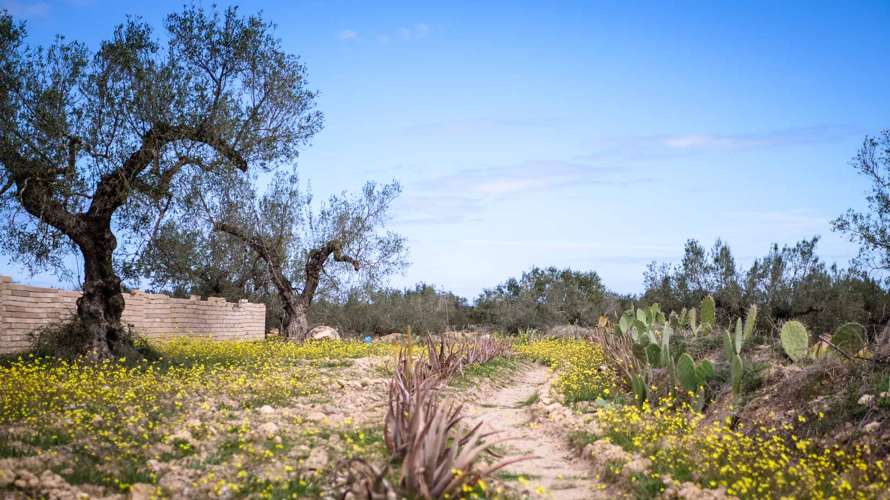
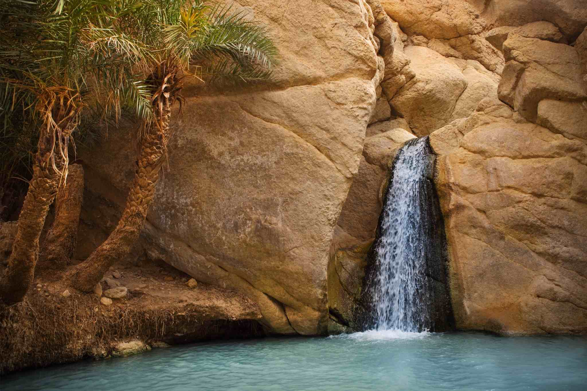
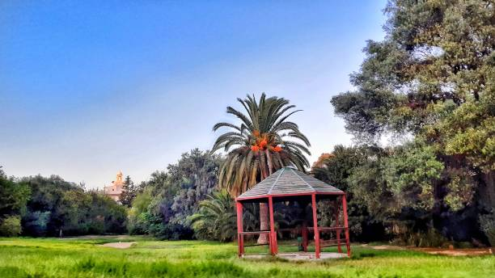

Durabilité du Tourisme en Tunisie
La durabilité est devenue un enjeu majeur dans l'industrie du tourisme en Tunisie. Le pays s'efforce de développer un tourisme respectueux de l'environnement, de la culture locale et des ressources naturelles.


Des initiatives telles que la préservation des sites naturels, la promotion de l'écotourisme et la sensibilisation des voyageurs à l'impact de leurs actions sont encouragées. Le gouvernement travaille également à réduire les déchets, à protéger la biodiversité et à promouvoir les pratiques touristiques durables à travers le pays.
